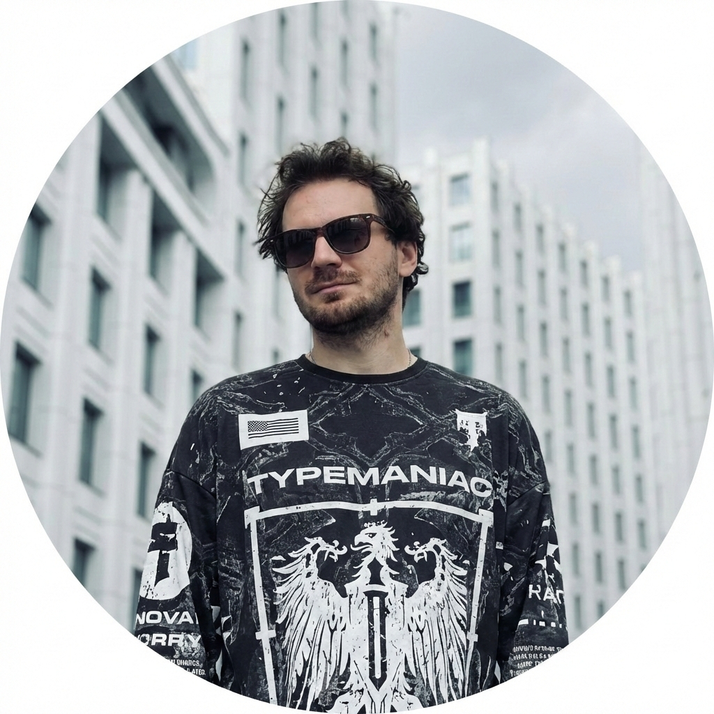

Crazy Artist @ Vertex.CGI
Привет, я Стас! Работаю в Vertex.CGI с общим опытом в графике около 15 лет ⌛. Начинал ещё на заре Andrew Kramer 🎥, когда 3D казался чем‑то из будущего, и дошел из несостоявшегося переводчика норвежского 🇳🇴 до Crazy Artist 🏆 в топ‑1 креативной студии по виральному контенту 🪄.
Обожаю работать в Cinema 4D 🚀 вместе с Redshift 🔴, After Effects уже давно течет у меня по венам, но всегда открыт новому: Nuke 💣, Substance 🧪, Janga FX ✨ и разные забавные плагины для Blender 🍰 уже давно в моём арсенале. Периодически записываю всякие «дудориалы» на индусский манер, которыми буду тут делиться.
Последнее время решил заняться написанием разных плагинов для работы в After Effects и Cinema4D, чем делюсь в канале тут письменно и в видеоформате!
Когда нужно «отключить мозг» 🧠, я ныряю в компьютерные игры 🎮 (раньше был хардкорщик в WoW ⚔️, теперь с друзьями в PUBG 🪂) и гоняю в волейбол 🏐 для разрядки.
В целом канал будет как склад мыслей, видосов и как место для моего графоманства. Так что тут не только графика, но и Я и всякие мои движения. Ну что, кратко познакомились! 🤝
Разбираемся с оптимизацией и прозрачностью в спрайтах и опасити, что выбрать?
▶️ Смотреть туториалУдобная навигация и скрипт для ускорения работы через скрипт, который должен быть у всех.
Делаем грязь с геометрией но сохраняем развертку, без Volume Builder, конечно же.
▶️ Смотреть туториалКак использовать этот инструмент на 100%, когда клиент пишет что нужен идеальный бренд цвет!
▶️ Смотреть туториалРабота со старым, но полезным тегом и скачиваем файл проекта.
Скрипт который делает Levels как Grade в нюке! (пока только скрипт - плагин позже).
Скрипт, который полуавтоматически собирает эффект агамографа. тут лучше погуглить что это, чем писать мне тут.
Удобный загрузчик материалов для Redshift.сам всё соберет, сам все распихает как нужно — без головняка.
Разрезает объект по polygon islands. Незаменимая вещь для текстурирования ворованных моделек xD
Бот, который позволяет следить за тем, как идет рендер на компе, прямо через Telegram. Получай уведомления о статусе и готовности, чтобы не сидеть у монитора в ожидании.
Перейти к боту 🚀